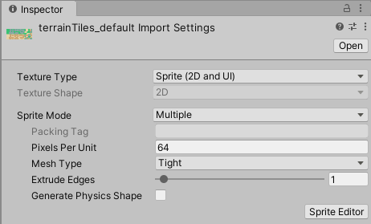
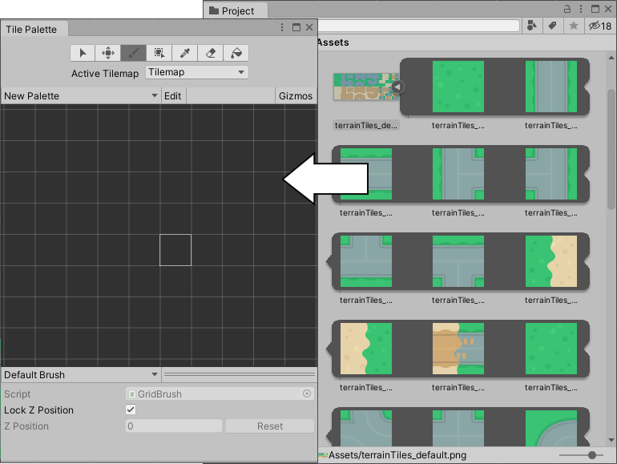
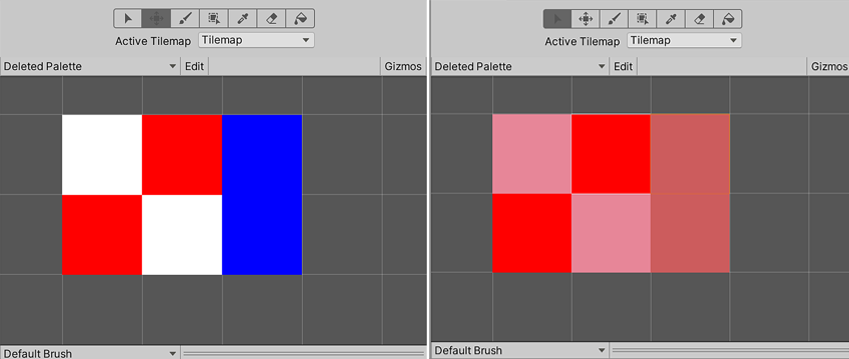

创建瓦片
可使用两种方法在 Unity 中创建瓦片 (Tile) 资源；第一种方法是从 Assets 菜单直接创建瓦片资源。第二种方法是从一组精灵自动生成瓦片资源。
为瓦片资源导入和准备精灵
通过将纹理放入 Assets 文件夹，即可将瓦片地图的各个瓦片或瓦片集导入 Unity 项目。选择导入的图像可以在 Inspector 窗口中查看其纹理导入器 (Texture Importer) 设置。

精灵导入设置。
导入精灵供瓦片地图中使用时，请使用以下建议设置。有关每项设置的更多信息，请参阅 Texture Type: Sprite (2D and UI) 文档。
1.Texture Type - 将此项设置为 Sprite (2D and UI)。瓦片地图不支持其他纹理类型。
2.Sprite Mode - 如果纹理只包含一个精灵，将此项设置为 Single。如果纹理包含多个元素，例如包含多个瓦片纹理的瓦片集，则设置为 Multiple。
在导入精灵图集时将 Sprite Mode 设置为 Multiple。
3. Pixels Per Unit (PPU) - This value is the number of pixels that make up one Unity unit for the selected Sprite. This determines the size of the Tile Sprite when it is rendered on the Tilemap. It is recommended to set this value to the width(in pixels) of a single Tile Sprite so that a Tile is equal to one Unity unit in width. For both Hexagonal and Isometric Tiles, measure the width of the Sprites at their widest. The size of the Tile Sprites are also affected by the Cell Size property of the Grid parent of the Tilemap also affects the size of Tile Sprites as the Cell Size determines how many Unity units equal to a single Cell.
In the example below, the imported Sprites are 64x64. The default Tilemap has a Cell Size of (XYZ: 1, 1, 0) Unity units. To make a Tile Sprite fit exactly on a single Cell of the Tilemap, set its PPU value to 64 to match its pixel width. The Sprite’s entire width then corresponds to one Unity unit, which is equal to the width (X value: 1) of a single Cell on the Tilemap.

Left: Sprites set to 64 PPU. Middle: Same Sprites set to 128 PPU. Right: Sprites set to 32 PPU.
By doubling the original PPU value of 64 to 128, the Sprite scales to 0.5(64px/128) Unity units in width. Halving the PPU value to 32 instead scales the Sprites to 2(64px/32) Unity units in width. The Sprites appear smaller or bigger respectively, however their Cell position on the Tilemap remains unchanged.
4.Sprite Editor Outlines - 导入精灵后，通过打开每个精灵的 Sprite Editor 并编辑它们的轮廓即可优化轮廓。如果在将 Sprite Mode 设置为 Multiple 的条件下导入纹理并且纹理包含多个精灵，则应在 Sprite Editor 中编辑每个精灵的轮廓。
在瓦片面板中自动生成瓦片资源
通过将瓦片的单个精灵或精灵图集直接放入Tile Palette 窗口（如果该窗口未打开，请转到 Window > 2D > Tile Palette），可自动生成瓦片。
首先，准备并导入瓦片精灵，然后在 Tile Palette 窗口中打开 ‘New Palette’ 下拉选单。从列表中选择一个现有的瓦片面板，或选择 ‘Create New Palette’ 打开 Create New Palette 对话框。

New Palette 下拉选单。
选择瓦片面板的属性后（有关不同选项的更多信息，请参阅瓦片面板文档），请选择 Create 在窗口中打开新的面板。

选择 ‘Create’ 创建一个新的瓦片面板。
创建或加载瓦片面板后，请将 Assets 文件夹中的纹理或精灵直接拖放到 Tile Palette 窗口中。系统将提示输入新瓦片资源的保存位置。选择保存位置，新的瓦片资源就会在选择的文件夹中生成。生成的瓦片也会自动放置在瓦片面板上。

瓦片资源来源：Kenney
删除瓦片资源
当您删除瓦片资源时，它们将被替换为占位瓦片（由带有各种粉红色阴影的白色方块组成）。占位瓦片放置在已删除瓦片资源的原始位置的瓦片地图上。这有助于识别在项目中有意或无意删除的瓦片资源。
每个删除的瓦片资源都有一个对应的占位瓦片，带有独特的粉红色阴影，可将占位瓦片彼此区分开来。您可以通过使用灌填工具将这些占位瓦片替换为另一个瓦片，或者或删除它们。

左：具有三种不同颜色瓦片资源的瓦片面板（以它们各自的颜色命名 - White、Red 和 Blue）。右：删除白色和蓝色瓦片资源后的瓦片面板。红色瓦片资源尚未删除。
占位瓦片替换已删除瓦片资源添加于 2020.2 NewIn20202 页面内容和屏幕截图更新于 2020.1 NewIn20201 * 在 2017.2 版中添加了瓦片地图 NewIn20172